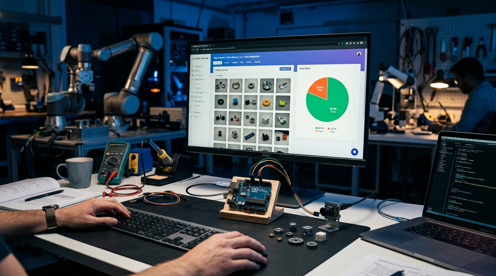

สาระสำคัญและผลการเรียนรู้ประจำบท
กรอบมาตรฐานการเรียนรู้ตามหลักสูตรแกนกลางการศึกษาขั้นพื้นฐาน และสมรรถนะสำคัญของผู้เรียน
การตรวจจับวัตถุบนอุปกรณ์สมองกลฝังตัวจำเป็นต้องอาศัยโครงข่ายประสาทเทียมที่มีความเร็วสูงและใช้ทรัพยากรคำนวณต่ำ สถาปัตยกรรม FOMO (Faster Objects, More Objects) ได้รับการออกแบบขึ้นมาเพื่อทดแทนโมเดลตรวจจับวัตถุแบบเดิม โดยเปลี่ยนจากการทำนายกรอบสี่เหลี่ยม (Bounding Box Regression) มาเป็นการพยากรณ์จุดศูนย์กลางของวัตถุผ่านตารางกริดย่อย (Centroid Grid Prediction) บนโครงข่าย MobileNetV2 ทำให้ประมวลผลได้เร็วกว่าโมเดลทั่วไปถึง 30 เท่า และใช้หน่วยความจำ RAM เพียงไม่กี่ร้อยกิโลไบต์ จึงเหมาะสมอย่างยิ่งสำหรับงานนับจำนวนและระบุตำแหน่งชิ้นงานบนระบบ Edge AI
ผลการเรียนรู้ที่คาดหวังตามกรอบสมรรถนะ (Learning Outcomes)
ผู้เรียนสามารถอธิบายหลักการทำงานของโมเดล FOMO ความแตกต่างระหว่างการพยากรณ์กรอบวัตถุกับการแบ่งเซลล์กริดพยากรณ์จุดศูนย์กลาง และตัวชี้วัดประสิทธิภาพ (Precision, Recall, F1-Score) ได้อย่างถูกต้อง
ผู้เรียนสามารถจัดเตรียมชุดข้อมูลภาพวัตถุ กำหนดขอบเขตกรอบสี่เหลี่ยมในเมนู Labeling Queue และจัดสรรสัดส่วนชุดข้อมูลฝึกสอนต่อชุดข้อมูลทดสอบตามมาตรฐานสถิติได้อย่างถูกต้อง
ผู้เรียนสามารถออกแบบบล็อก Impulse, ปรับแต่งพารามิเตอร์การฝึกสอนโมเดล MobileNetV2 (0.35), วิเคราะห์ตาราง Confusion Matrix และส่งออกโมเดล .eim สำหรับนำไปใช้งานจริงได้อย่างสมบูรณ์
ผู้เรียนมีความมุ่งมั่นและละเอียดรอบคอบในการติดป้ายกำกับข้อมูลวัตถุ ตระหนักถึงความสำคัญของความสมดุลระหว่างความเร็วและความแม่นยำในการตรวจจับ และมีทัศนคติที่ดีต่อการพัฒนานวัตกรรมปัญญาประดิษฐ์
สถาปัตยกรรมโมเดล FOMO และการตรวจจับจุดศูนย์กลางวัตถุ
โมเดลตรวจจับวัตถุแบบเดิม เช่น YOLO (You Only Look Once) หรือ SSD (Single Shot MultiBox Detector) มีโครงสร้างที่ซับซ้อนอย่างยิ่ง เนื่องจากต้องทำนายทั้งตำแหน่งพิกัด ขอบเขตความกว้างความสูง (Bounding Box Regression) และการคำนวณ Anchor Boxes หลายพันจุดพร้อมกัน ส่งผลให้ต้องการหน่วยความจำแรม (RAM) หลายสิบเมกะไบต์ และจำเป็นต้องใช้ชิปประมวลผลกราฟิก (GPU) ซึ่งไม่สามารถทำงานได้บนอุปกรณ์สมองกลฝังตัวขนาดเล็ก
สถาปัตยกรรม FOMO (Faster Objects, More Objects) ได้รับการคิดค้นขึ้นเพื่อแก้ปัญหาดังกล่าว โดยเปลี่ยนโจทย์การตรวจจับวัตถุให้กลายเป็นการ จำแนกประเภทจุดศูนย์กลางบนตารางกริด (Grid-based Centroid Classification) โมเดลจะแบ่งภาพออกเป็นเซลล์ย่อย (เช่น ตารางขนาด 12x12 สำหรับภาพ 96x96 พิกเซล) แล้วทำนายว่าใจกลางของแต่ละเซลล์เป็นพื้นหลัง (Background) หรือเป็นจุดกึ่งกลางของวัตถุประเภทใด ผลลัพธ์คือขนาดของโมเดลลดลงเหลือเพียง น้อยกว่า 300 KB และมีความเร็วในการประมวลผลสูงกว่าโมเดลแบบเดิมถึง 30 เท่า

รูปที่ 8.1: แผนภาพแสดงโครงสร้างสถาปัตยกรรม FOMO และการแปลงปัญหาการตรวจจับกรอบวัตถุสู่การจำแนกจุดศูนย์กลางบนกริดคุณลักษณะ
| คุณลักษณะเปรียบเทียบ | สถาปัตยกรรมแบบเดิม (YOLOv5 / SSD) | สถาปัตยกรรม FOMO (Edge Impulse) |
|---|---|---|
| เป้าหมายผลลัพธ์ (Output) | พิกัดกรอบล้อมรอบ [x, y, width, height] | จุดศูนย์กลางของวัตถุ Centroid (cx, cy) |
| การใช้หน่วยความจำแรม (RAM) | 10 MB - 60 MB+ | < 300 KB (ลดลง 95%+) |
| ความเร็วในการประมวลผล | 1 - 5 FPS (บน Arm Cortex) | 30 - 60+ FPS (เวลาจริง) |
| การตรวจนับวัตถุหลายชิ้น | ต้องใช้ขั้นตอน Non-Maximum Suppression (NMS) | นับจำนวนได้ทันทีจากจุดยอดในกริด |
เนื้อหาบทเรียน 4 ตอน (Course Content Units)
หลักการทำงานของโมเดล FOMO และการแบ่งเซลล์กริด
ในการทำงานของ FOMO ภาพอินพุตจะถูกประมวลผลผ่านโครงข่ายประสาทเทียมแบบคอนโวลูชัน (Fully Convolutional Network: FCN) โดยไม่มีชั้น Fully Connected ที่ตอนท้าย ทำให้ภาพขนาด 96x96 พิกเซลถูกบีบอัดลงมาเป็นตารางขนาด 12x12 เซลล์ (Downsampling Factor = 8)
- เนื่องจากขนาดเซลล์ของกริดมีขนาด 8x8 พิกเซล หากมีวัตถุ 2 ชิ้นอยู่ใกล้กันมากจนจุดศูนย์กลางตกลงในเซลล์เดียวกัน โมเดลจะตรวจจับวัตถุดังกล่าวได้เพียงชิ้นเดียว
- หากต้องการตรวจจับวัตถุขนาดเล็กมากหรืออยู่ชิดกัน ให้เพิ่มความละเอียดภาพอินพุตเป็น
160x160หรือ320x320พิกเซล เพื่อให้เซลล์กริดมีขนาดเล็กลง
การจัดเตรียมชุดข้อมูลและการติดป้ายกำกับกรอบวัตถุ (Bounding Box Labeling)
การติดป้ายกำกับข้อมูลภาพบน Edge Impulse Studio ในโหมด Bounding Boxes มีขั้นตอนการปฏิบัติดังนี้:
- เปิดเมนู Data acquisition แล้วเลือกภาพที่ต้องการกำหนดป้ายกำกับ
- ใช้เครื่องมือตีกรอบสี่เหลี่ยมล้อมรอบตัววัตถุแต่ละชิ้น เช่น ล้อมรอบชิ้นส่วนตลับลูกปืน (Bearing), น็อตตัวผู้ (Bolt), หรือน็อตตัวเมีย (Nut)
- กำหนดชื่อคลาสกำกับกรอบให้ตรงตามประเภทชิ้นงาน
- ระบบจะคำนวณจุดกึ่งกลางของกรอบสี่เหลี่ยมเพื่อใช้เป็นค่าอ้างอิงจริง (Ground Truth Centroid) สำหรับการฝึกสอนโดยอัตโนมัติ
การตีกรอบควรให้ขอบแนบชิดกับตัววัตถุอย่างพอดี ไม่ควรกว้างหรือแคบเกินไป เพราะจะทำให้จุดกึ่งกลาง (Centroid) คลาดเคลื่อน ส่งผลให้อัลกอริทึมสูญเสียความแม่นยำในการระบุพิกัดตำแหน่ง
การตั้งค่า Impulse และการฝึกสอนโมเดล MobileNetV2 (0.35)
ในเมนู Impulse Design ให้กำหนดบล็อก Image ปรับขนาดเป็น 96x96 RGB และเพิ่มบล็อกการเรียนรู้ Object Detection (Images)

รูปที่ 8.2: หน้าต่างการฝึกสอน Object Detection บน Edge Impulse Studio แสดงพารามิเตอร์ของโมเดล FOMO และกราฟการเรียนรู้
- Neural Network Architecture: เลือก FOMO (Faster Objects, More Objects) MobileNetV2 0.35
- Number of epochs: กำหนดไว้ที่ 50 - 80 รอบการเรียนรู้
- Learning rate: กำหนดค่ามาตรฐาน
0.001(Adam Optimizer) - Data Augmentation: เปิดใช้งานการพลิกภาพ (Flip), การหมุน (Rotation ±15°) เพื่อเพิ่มความทนทานต่อมุมมองของกล้อง
การประเมินประสิทธิภาพด้วย Confusion Matrix, Precision, Recall และ F1-Score
การประเมินความแม่นยำของโมเดลตรวจจับวัตถุใช้เกณฑ์การตัดสินจาก เมทริกซ์ความสับสน (Confusion Matrix) โดยคำนวณตัวชี้วัดสำคัญ 3 ประการ:
สัดส่วนของชิ้นงานที่โมเดลทำนายว่าใช่ แล้วเป็นชิ้นงานนั้นจริง ยิ่งค่าสูงแสดงว่าการเตือนผิดพลาด (False Alarm) ต่ำ
สัดส่วนของชิ้นงานจริงทั้งหมดที่โมเดลสามารถค้นพบได้ ยิ่งค่าสูงแสดงว่าวัตถุไม่หลุดรอดสายตา (Missed Detection ต่ำ)
ค่าเฉลี่ยฮาร์โมนิกที่ถ่วงน้ำหนักความสมดุลระหว่าง Precision และ Recall ใช้เป็นตัวแทนตัดสินคุณภาพโมเดลโดยรวม
ตัวอย่างโค้ดและการทดสอบระบบ (Code Implementation & Testing)
ไฟล์โค้ดสำหรับบทเรียนนี้ได้รับการจัดเก็บไว้ในโฟลเดอร์ code_examples/chapter08 ประกอบด้วยไฟล์คอนฟิกูเรชัน app.yaml และสคริปต์ประเมินผลการตรวจจับวัตถุ fomo_eval.py
name: FOMO Object Detection Evaluator
description: "การตรวจจับวัตถุหลายชิ้นและนับจำนวนด้วยโมเดล FOMO บน Arduino UNO Q"
ports: []
variables: {
EI_OBJ_DETECTION_MODEL: "/home/arduino/.arduino-bricks/ei-models/fomo_object_detection.eim",
CONFIDENCE_THRESHOLD: "0.60",
INPUT_WIDTH: "96",
INPUT_HEIGHT: "96",
TARGET_CLASSES: "bolt,nut,bearing",
MAX_DETECTIONS: "20"
}
bricks:
- id: "object_detection_brick"
type: "fomo_object_detection"
enabled: true
class FOMOEvaluator:
"""คลาสสำหรับประเมินผลการตรวจจับวัตถุตามสถาปัตยกรรม FOMO"""
def __init__(self, confidence_threshold: float = 0.60):
self.confidence_threshold = confidence_threshold
self.classes = ["bolt", "nut", "bearing"]
def evaluate_detections(self, detections: list) -> dict:
valid_items = []
counts = {cls: 0 for cls in self.classes}
grid_map = [["." for _ in range(GRID_SIZE)] for _ in range(GRID_SIZE)]
for item in detections:
score = item.get("score", 0.0)
if score >= self.confidence_threshold:
label = item.get("label", "unknown")
# คำนวณจุดศูนย์กลาง (Centroid)
cx = item["x"] + item["width"] / 2.0
cy = item["y"] + item["height"] / 2.0
gx = min(GRID_SIZE - 1, max(0, int(cx // CELL_PIXELS)))
gy = min(GRID_SIZE - 1, max(0, int(cy // CELL_PIXELS)))
symbol = label[0].upper() if label != "bearing" else "R"
grid_map[gy][gx] = symbol
counts[label] += 1
valid_items.append({
"label": label,
"centroid_pixel": (round(cx, 1), round(cy, 1)),
"grid_coord": (gx, gy),
"confidence": round(score, 3)
})
return {
"total_detected": len(valid_items),
"class_counts": counts,
"detected_objects": valid_items,
"grid_map": grid_map
}
$ python code_examples/chapter08/fomo_eval.py
===========================================================================
บทเรียนที่ 8: การประเมินสมรรถนะโมเดลตรวจจับวัตถุ FOMO (Object Detection)
รายงานการระบุพิกัดจุดศูนย์กลางและจำแนกประเภทชิ้นส่วนอุตสาหกรรม
===========================================================================
[*] เกณฑ์ความเชื่อมั่นขั้นต่ำ (Confidence Threshold): 0.6
[*] จำนวนวัตถุที่ผ่านเกณฑ์ทั้งหมด: 5 ชิ้น
[*] สรุปจำนวนชิ้นงานจำแนกตามประเภท (Object Counts):
├─ Bolt : 2 ชิ้น
├─ Nut : 2 ชิ้น
├─ Bearing : 1 ชิ้น
--- แผนภาพแสดงจุดศูนย์กลางของวัตถุบนกริด (Centroid Map 12x12) ---
00 01 02 03 04 05 06 07 08 09 10 11
02 [ · · B · · · · · · · · · ]
03 [ · · · · · · B · · · · · ]
06 [ · · · · · · R · · · · · ]
07 [ · · · N · · · · · · · · ]
08 [ · · · · · · · · N · · · ]
===========================================================================
รายงานตัวชี้วัดประสิทธิภาพเชิงสถิติ (Model Evaluation Metrics)
===========================================================================
คลาสวัตถุ | TP | FP | FN | Precision | Recall | F1-Score
---------------------------------------------------------------------------
Bolt (น็อตตัวผู้) | 45 | 3 | 2 | 0.9375 | 0.9574 | 0.9474
Nut (น็อตตัวเมีย) | 40 | 2 | 4 | 0.9524 | 0.9091 | 0.9302
Bearing (ตลับลูกปืน) | 50 | 1 | 1 | 0.9804 | 0.9804 | 0.9804
---------------------------------------------------------------------------
[สรุปผล] สถาปัตยกรรม FOMO ให้ค่า F1-Score สูงกว่า 94% บนขนาดโมเดลที่กะทัดรัดยิ่งยวด
ใบงานและภารกิจปฏิบัติการประจำบทเรียน (Practical Tasks)
ให้นักเรียนปฏิบัติตามภารกิจทั้ง 5 ขั้นตอน โดยคลิกทำเครื่องหมายลงในช่องสี่เหลี่ยมเมื่อปฏิบัติภารกิจเสร็จสมบูรณ์ ระบบจะคำนวณและบันทึกความก้าวหน้าลงในหน่วยความจำของอุปกรณ์โดยอัตโนมัติ
คำถามประเมินความเข้าใจและคิดวิเคราะห์ (Review Questions)
คลิกเพื่อดูแนวคำตอบ
คลิกเพื่อดูแนวคำตอบ
คลิกเพื่อดูแนวคำตอบ
แบบทดสอบท้ายบทเรียนที่ 8 (ปรนัย 10 ข้อ)
ทดสอบความรู้ความเข้าใจตามเกณฑ์มาตรฐานตัวชี้วัดสาระเทคโนโลยี พร้อมเฉลยและบันทึกคะแนนอัตโนมัติ